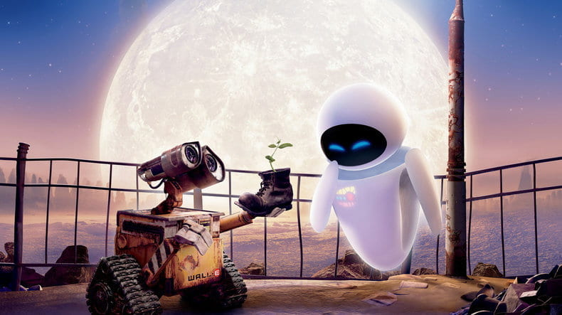
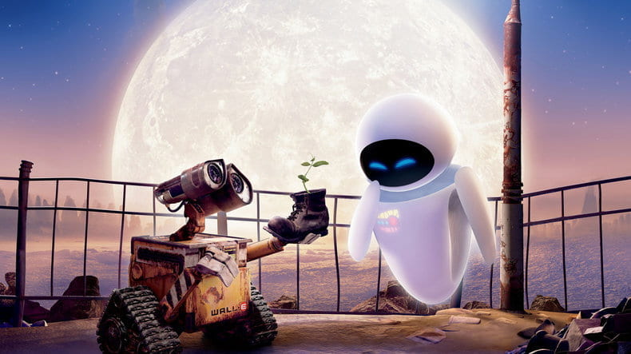

About Wall-E: Wall-E was a robot featured in the Disney movie: "WALL-E".
He is an extremely shy robot who is alone on Earth and is programmed to clean up Earth so it can be
fit for humans again. He feels lonely and longs for companionship. After almost 700 years, he meets
Eve (Extra-Terrestrial Vegetation Evaluator: a robot sent by humans from space to find a plant),
and falls in love with her.
The movie reflects WALL-E's emotions and the efforts he puts to express his love and stay with Eve.

 

Note: While I was completing this assignment, I noticed a very important thing that most of
Wall - E's emotions are in his eyes. The way they slant from the top actually make him look nervous or scared
or even emotional. I really wanted to convey that emotion in Wall-E, but I could not get the perfect shape of
his eyes. So instead, I made eyebrows so I can reflect his expressions to some extent.
Image citations:
1) https://steamcommunity.com/sharedfiles/filedetails/?id=934527371
2) https://blogs.iu.edu/establishingshot/2021/09/13/wall-e-robots-romance-and-resilience/
3) https://www.pinterest.com/pin/248331366936154981/
4) https://m.facebook.com/ParamountAbilene/photos/a.197860366514/10162159658096515/?type=3&eid=ARBJ
GoQl8MOdB6yEa-rxozAgN9ePPduI1KtjxsViuKzBmz2UeaZBechbvPceRI7afdXexD8HhlXSqYZ-